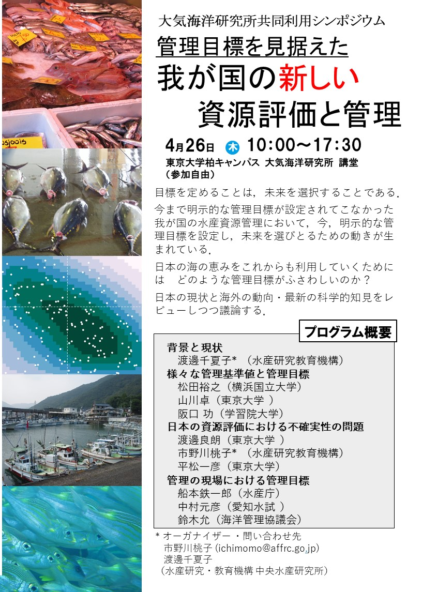

管理目標を見据えた我が国の新しい資源評価と管理
要旨集
こちらよりダウンロードしてください．
月刊海洋
本シンポジウムの内容が月刊海洋：2018年10月号に特集号として出版されました．内容は以下のリンクよりダウンロード可能ですので，ご自由にお使いください．
- 目次
- 総論：管理目標を見据えた我が国の新しい資源評価と管理（市野川桃子・渡邊千夏子）
- 現行のABC算定ルールと管理目標（渡邊千夏子）
- 資源管理における管理目標の重要性（松田裕之・竹本裕太・森 宙久・永野一郎）
- 異なる管理目標下での最適漁獲（山川 卓）
- 地域漁業管理機関における資源管理の現状（阪口 功）
- 大変動する資源と安定な資源の生態学（渡邊良朗）
- MSY基準にもとづく日本資源の現状と合意形成にむけて（市野川桃子）
- 管理戦略評価（MSE）による不確実性の考慮（平松一彦）
- 地先の資源の評価・管理について（中村元彦）
- MSC規準におけるMSYや管理基準点の位置づけ（鈴木 允）
チラシ

- 本シンポジウムは東京大学大気海洋研究所共同利用の枠組みにより実施されました
- 月刊海洋の全文PDFは科研費（JP26520313，基盤C(特設分野研究)「管理戦略評価法による次世代水源資源管理ルールの構築」により購入されたものです）